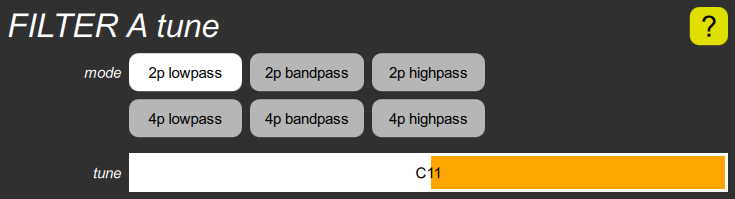

FILTER tune cluster

This contains the mode parameter which determines whether the filter passes frequencies up to the tuning frequency (lowpass), frequencies around the tuning frequency (bandpass), or frequencies from the tuning frequency up (highpass). It also determines whether it is a two-pole (2p) filter or four-pole (4p); the latter attenuates out-of-band frequencies twice as much.
This also contains the tune slider, which shows the basic filter tuning before modulation as a MIDI pitch (although it exceeds the MIDI range at the high end). This is the pitch that will be heard if the resonance is turned all the way up so that the filter oscillates.